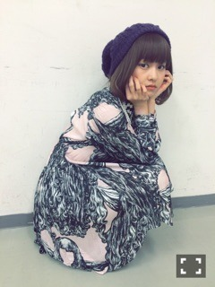

| 2015/10 19 Mon | 傷んだ髪色。673回目 |
昨日は幕張で個別握手会でした〜
トップス Kastane
ベルト、スカート、靴 used
ネックレス Aquvii
ヴィンテージショップで買った
プリーツのティアードスカート！
素材とシルエットが可愛いよ〜

中途半端で好きな長さ。
内巻きよりストレートだな！

ワンピース あちゃちゅむ
髪の毛柄がなんかハロウィンとか
それっぽいかと思って着ました(^-^)
何のコスプレ？って聞かれても
特に決まってませんで通しました。
シースルーマキシワンピ あちゃちゅむ
この日のあちゃちゅむ率。
花柄のコートも、ある！
あちゃちゅむは色味が落ち着いてる
花柄だから惹かれます。
コートの方には虫も居ます！！
着るの楽しみ〜
久しぶりの握手会で、
太陽ノックが流れて
なんかもう懐かしかったです。
舞台のこと、雑誌のこと等
感想ありがとうございました！
クレメンタインについては
観ていてムカついたとか
万理華を本当に嫌いに
なりそうだったとか
でも憎めなくて好きだったとか
素直に言ってくれて...
そして、ダンス良かった！
と言ってくれる方が多くて
嬉しかったです＼(^o^)／
乃木坂にはないジャンルのものを
目一杯踊れてしあわせだった。
死んだ後の残りの溜まった時間を
ダンスに爆発させていました。
伝わったかな？
来てくれたみなさん、
ありがとうございました。
気になって初めて来てくれたのに
いきなり髪型違いすぎて
誰ですか？となったりとか、、
またこういうことが突然
起きるかもしれないけど、
めったにないけど
それも含め楽しんでくださいo(^_^)o
1日限定でした。

M-ON! SPECIAL 「乃木坂46」〜太陽ノック!!!〜Vol.2
昨日放送されました！
見たかな〜？
個人PV特集なので、
MdN EXTRA片手に見るのが
より面白いのではないでしょうか(^-^)
見逃した方は、リピート放送でぜひ。
10/31(土) Vol.2...19:00〜21:00
11/3(火) Vol.1...14:00〜16:00／Vol.2...16:00〜18:00
まりか
コメント(618)
2015/10/19 20:24